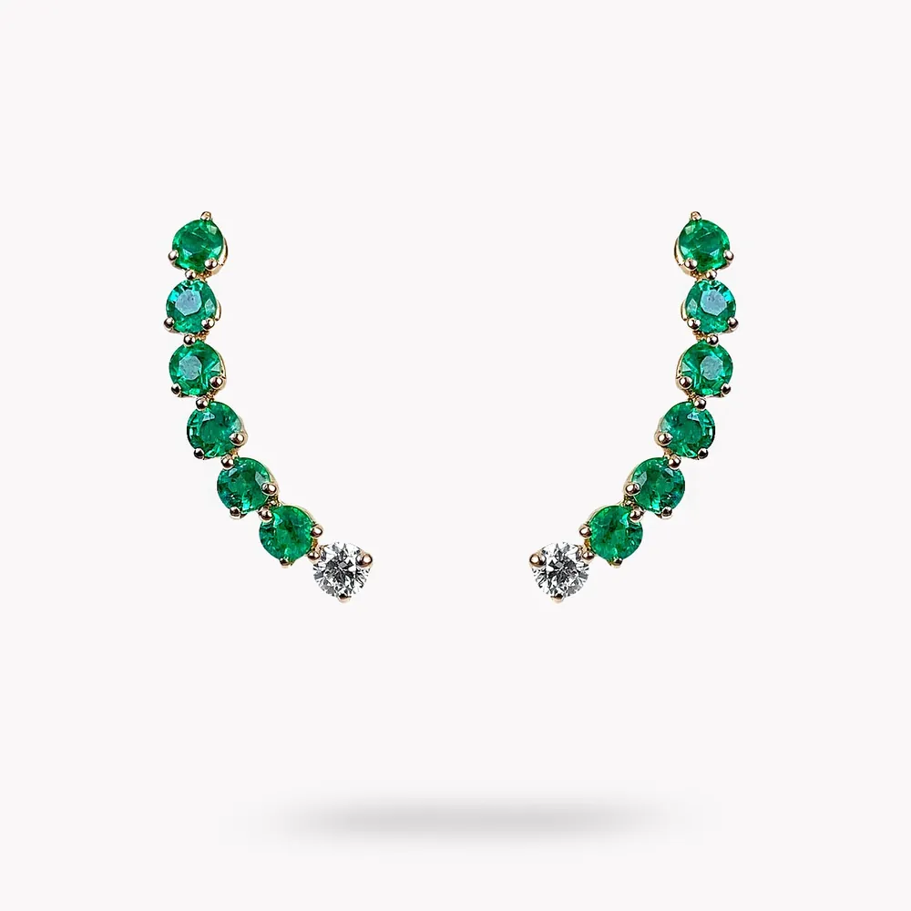
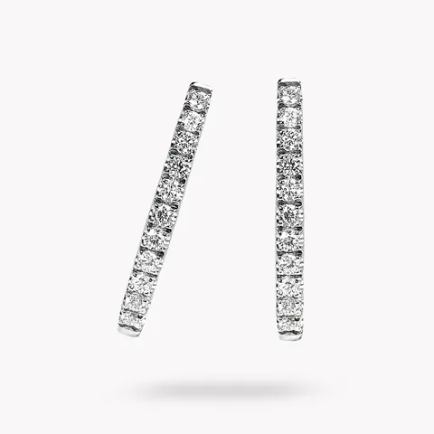
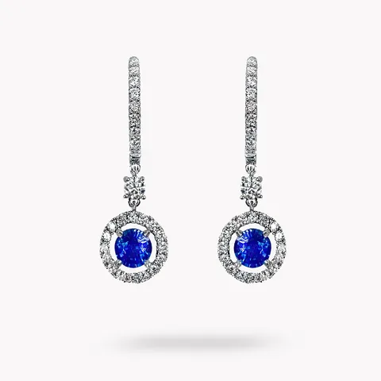
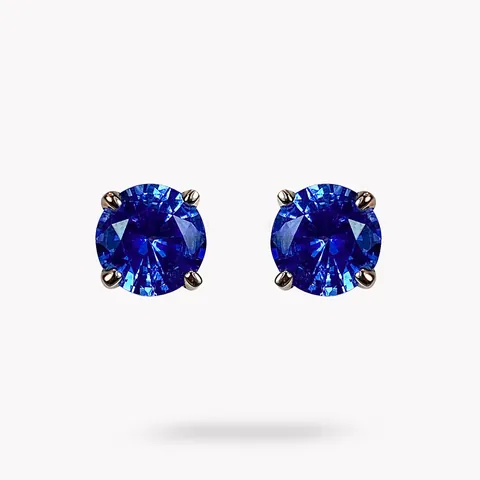

Inicio · La joyería · Pendientes

Pendientes
Pendientes de oro rosa con diamantes y esmeraldas
Ref. POST-24
Pendientes de oro rosa con diamantes y esmeraldas talla brillante de Luque Joyeros.
- Metal
- Oro Rosa
- Gemas y tallas
- Brillante, Diamante, Esmeralda
- Referencia
- POST-24
Precio y disponibilidad, en la joyería.Te lo confirmamos por WhatsApp o sentados en la mesa.
Para ver en la misma bandeja


